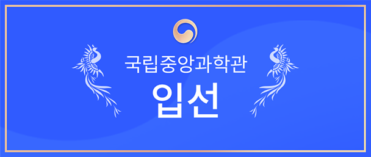

인공지능과 예술 공모전
응모방법
공모 주제
- AI를 통한 낯선 아름다움의 발견
- 낯선 아름다움이란? 인간과 인공지능 알고리즘간의 창조적 협력 관계를 통해 발견할 수 있는 예술적 놀라움과 가치를 말합니다.
공모 내용
- 인공지능 기술을 활용한 창작 작품
(그림, 음악, 안무, 미디어아트, 융합형 콘텐츠 등 온라인/웹에서 표현 가능한 창작물) - 자작 AI 알고리즘(ex. 생성적 적대 신경망 알고리즘 등)을 활용하거나, 또는 이와 동등한 원리로 구현된 공개·상용 소프트웨어를 활용한 창의적인 작품 제작 및 출품
- 수상 예정 작품들은 전문가에 의한 AI 기술 활용 여부 검증 및 재현 가능성 여부 검증 예정
참가 자격
- 개인 또는 팀 (5인 이하)으로 응모 가능
- 학생부: 초·중·고등학교에 소속된 만 19세 미만 학생
- 일반부 : 만 19세 이상 일반인 또는 아티스트 누구나 응모 가능
- 팀은 5인 이하로 구성, 학생 + 일반인의 교차 구성 불가
제출서류 및 제출 형식
- 제출 작품 / 대표 이미지(모든 작품) / 참가신청서 각 1부
- 출품 작품 디지털 파일 제출 규격 : jpg, png, svg, gif, mp3, mp4, avi 등
- 이미지 : 512x512 픽셀 이상 이미지 (이미지 1장당 20MB 이하의 파일 등록)
- 음원 : 5분 이내의 mp3파일, 192kbps이상, 10MB이하의 파일 등록
- 영상 : 1280x720, 길이는 최대 3분, 용량은 500MB이내
제출 방식
- 신청서 다운로드 후 이메일 접수 : aixart2021@gmail.com
- 이메일 제목과 파일명
( [참여부문] 이름_작품명 )형식 준수 EX. [학생부문] 홍길동_낯선 아름다움
공모전 일정
공모전에서 선정된 출품작은 인공지능과 예술 온라인 특별전에서 전시됩니다
- STEP1 이메일 접수 21.09.01 (수) ~ 10.24 (일)
- STEP2 출품작 검토 21.10.25 (월) ~ 10.30 (일)
- STEP3 전문가 심사 21.11.15 (월) ~ 11.30 (일)
- STEP4 최종 수상작 발표 21.12.03 (금)
- STEP5 시상식 21.12.10 (금)
- STEP6 온라인 전시 21.11.01 (월) ~ 22.03.31 (목)
※ 일정은 진행에 따라 사전 고지없이 변경될 수 있습니다.
심사방식
심사위원
- 그림, 음악, 안무, 미디어아트, AI기술 분야 전문 평가위원 구성
심사기준
- 본상
- 작품의 예술성과 참신성, AI 기술 활용의 적정성 등 종합 평가
- 공모전 출품 작품과 참가신청서에 기재된 작품 에세이 및 작품 설명 내용을 종합적으로 평가
- 특별상
- 인기상 : 본상을 제외한 작품들에 대한 인기투표 순위로 선정
- 참가상 : 응모 선착순 100명 (출품작으로 선정된 작품에 한함)
- 동점자 발생시, 작품의 예술성 > AI 기술 활용의 적정성 순서의 고득점자를 선정하고, 이후 동점 출품작에 대해 전문가 재심사 실시
시상내역
• 일반부
-
상금 300만원 (1명)
-
상금 150만원 (2명)
-

상금 30만원 (5명)
• 학생부
-

상금 200만원 (1명)
-
상금 100만원 (2명)
-

상금 30만원 (5명)
• 특별부
-

문화상품권 5만원 (20명)
-

커피 쿠폰 (100명)
- 접수 작품 상황에 따라 시상 내역은 조정될 수 있습니다.
- 수상작은 심사 위원장의 심사평과 함께 전시회 및 전시 도록 등에 활용됩니다.
- 수상자는 작가 영상 인터뷰 촬영 및 작품 제작 설명회 개최 등을 통해 AI를 활용한
예술 작품 제작 과정을 공유할 수 있습니다.
유의사항
- 본 공모전에 응모하는 모든 제출물은 순수한 창작 활동에 의해 기획된 작품이어야 합니다.
- 출품작은 자작 AI 알고리즘(ex. 생성적 적대 신경망 알고리즘 등)을 활용하거나, 또는 이와 동등한 원리로 구현된 공개·상용 소프트웨어를 활용하여 창작한 작품을 제출하여야 합니다.
- 수상작 선정이후 원본데이터(일러스트, PSD 파일, 원본 이미지 및 영상, 음성 파일, AI 소스코드(파이썬 스크립트, py) 등 작업내용을 확인할 수 있는 원본 파일)는 5일 이내 제출하여야 합니다. 만약 제출한 원본 데이터가 응모작과 일치하지 않거나, 기한내 제출하지 않은 경우 또는 기재된 연락처가 불분명하여 연락이 되지 않은 경우 수상에서 제외됩니다.
- 수상 예정 작품들은 전문가에 의한 AI 기술 활용 여부 및 재현 가능성 여부를 검증 예정이며, 공모전 응모자의 자체 제작 작품으로 판명되지 않을 경우 수상이 취소 될 수 있습니다.
- 모든 응모작품은 국내·외 저작권(이미지, 캐릭터, 폰트, 음원, 영상, 프로그램 등의 사용)·제3자의 초상권·지적 재산권·대여권 등 관련 법률에서 지정하고 있는 제반 권리를 침해하여서는 안 되며, 법적인 문제 발생 시 모든 민·형사상의 법적인 책임과 비용부담은 출품자에게 있습니다. 또한, 주최·주관 측은 이에 대한 어떠한 법적인 책임도 지지 않습니다.
- 출품작에 저작권이 인정되는 타인의 저작물을 수록한 경우, 출품자는 해당 저작권자로부터 정당한 사용을 허락받았음을 증명하는 서류를 첨부하여 제출하여야 합니다.
- 수상작품에 대한 저작권은 수상자에게 있으나, 주최기관이 수상작을 홍보와 비영리 목적으로 활용(제작, 복제, 배포 등)할 수 있는 권리가 있으며, 본 행사 목적과 취지의 범위 내에서 수상작의 전체나 일부를 변경하여 이용할 수 있습니다. 이에 동의하지 않을 경우 수상작 선정 대상에서 제외합니다. (수상 결정 후 수상취소 포함.)
- 제출한 작품이 아래의 내용에 해당될 경우, 심사대상에서 제외되거나 수상한 경우 수상 취소 및 상금 등 전액 반환 조치가 되며 향후 발생하는 모든 법적 책임은 응모자에게 있습니다.
- 작품 규격에 맞지 않는 작품을 제출한 경우
- 출품작에 응모자 신원을 파악할 수 있는 표시가 발견된 경우
- 국내외에서 해당 작품이 발표되거나 판매된 적이 있는 경우
- 공공질서, 미풍양속을 저해하거나, 욕설, 외설이 포함되는 등 본 공모전의 취지와 맞지 않는 작품을 제출한 경우
- 다른 공모전에서 수상하거나, 유사 지원 사업(국가기관, 비영리법인, 작가지원사업 등)의 지원을 받아 제작된 작품일 경우
- 타인의 아이디어 도용 등 지적재산권 및 저작권을 침해하거나 표절 등의 사실이 확인된 경우
- 대리작, 차용작 또는 타인의 개인 정보로 작품을 제출한 경우
- 타 공모전 입상작(동일 작품이 아니더라도 작품 일부가 타 공모전에서 수상작으로 선정된 경우 포함)·메타데이터(속성정보) 변경·모방·차용·합성·조작·표절한 작품으로 판명된 경우, 시상 후에도 이러한 사실이 밝혀지면 시상을 취소하고 상장 및 상금. 모두. 회수 조치하며 이로 인한 손해가 발생 경우 참가자에게 손해배상을 청구할 수 있음.
- 원본 파일이 없는 경우 시상에서 제외될 수 있음
- 상품 및 기념품 수령 시, 제세공과금은 본인 부담이며 세무신고를 위해 필요한 본인 인증 서류를 제출하지 않을 경우, 당첨이 취소될 수 있습니다. 응모 작품 수와 수준에 따라 사전 공지 없이 일정, 수상 인원과 상금 등이 변경될 수 있으며, 당선에 적합한 작품이 없을 경우, 심사 결과에 따라 시상하지 않을 수 있습니다.
- 심사내용은 공개하지 않으며 심사위원 구성, 심사기준, 심사결과에 대해 이의를 제기할 수 없습니다.
- 응모 작품 수와 수준에 따라 수상 인원, 상금 등이 변동될 수 있으며, 당선에 적합한 작품이 없을 경우 심사결과에 따라 시상하지 않을 수 있습니다.
- 공모 내용과 일정은 사정에 따라 변경될 수 있으며, 변경사항은 공모전 홈페이지를 통해 수시로 공지되므로 불이익이 없도록 주의하기 바랍니다.
- 수상자는 시상을 위해 주최기관이 요구하는 관련 서류를 제출하여야 하며, 기한 내에 제출하지 않을 경우 수상이 취소될 수 있습니다.
- 공동 출품작(팀)일 경우 시상금과 상장은 대표자에게 지급되며, 상장에는 출품자 전원의 성명이 기재됩니다. 주최기관은 상장과 시상금의 배분 문제에 관여하지 않습니다.
- 우수상 이상 수상자는 시상식에 반드시 참석하여야 합니다(대리 수상가능)
FAQ
-
AIxART 공모전의 주제와 다른 작품을 출품할 수 있나요?
오랫동안 예술 창작은 인간 고유의 능력으로 생각되어 왔지만, 최근 그림, 음악, 안무 등 다양한 예술 분야에서 AI가 만든 작품들이 인간에게 놀라움을 선사하고 있습니다. 인공지능은 인간이 창작한 방대한 예술 작품 데이터로부터 일정한 패턴을 찾아 그동안 인간이 상상하지 못했던 새로운 결과를 내놓고 있으며, 인간은 더 나은 창조를 위해 AI와 협력 관계를 유지하고 있습니다 “낯선 아름다움의 발견”이라는 이번 공모전 주제를 통해, 인공지능과 인간이 함께 만들어내는 아름다움이란 무엇인지 다 함께 논의해 보는 기회가 되었으면 좋겠습니다. -
수상작은 어디에서 전시되나요?
선정된 출품작은 ｢인공지능과 예술｣ 온라인 특별전(http://aixart.co.kr/ )에서 전시됩니다. 전시 홈페이지는 2021년 11월1일에 오픈되며, 출품작은 2022년 3월31일까지 관람하실 수 있습니다. -
어떤 인공지능 플랫폼을 사용하나요?
자작 AI 알고리즘(ex 생성적 적대 신경망 알고리즘 등)을 활용하거나, 또는 이와 동등한 원리로 구현된 공개·상용 소프트웨어를 활용한 창의적인 작품을 제작/출품이 가능합니다 수상 예정 작품들은 전문가에 의한 AI 기술 활용 여부 및 재현 가능성 여부를 검증 예정이며, 공모전 응모자의 자체 제작 작품으로 판명되지 않을 경우 수상이 취소될 수 있습니다. -
참가신청서, 개인 정보 활용 동의서, 마케팅 활용 동의서는 대표자 1명만 제출해도 되나요?
수상작 선정 이후 원본 데이터(일러스트, PSD 파일, 원본 이미지 및 영상, 음성 파일, AI 소스코드(파이썬 스크립트, py) 등 작업 내용을 확인할 수 있는 원본 파일)는 5일 이내 제출하여야 합니다. 만약 제출한 원본 데이터가 응모작과 일치하지 않거나, 기한 내 제출하지 않은 경우 수상에서 제외될 수 있습니다. -
어떤 인공지능 플랫폼을 사용하나요?
2014년 이후 출생한 AI ART에 관심 있는 사람이라면, 국적, 성별, 학벌 구분 없이 누구나 참여 가능합니다. 만 19세 미만의 초, 중, 고등학교에 속한 학생부와 만 19세 이상의 대학생, 일반인, 아티스트는 모두 일반부에 지원 가능합니다. -
그룹이나 협회 소속으로 지원할 수 있나요?
예 5인 이하의 팀으로 참여 가능하지만 팀원은 학생+일반인의 교차 구성은 불가합니다. -
작품 제출수에 제한이 있나요?
1인 또는 1팀 당 최대 3작품까지 출품 가능합니다 단 동일 작품에 한해서는 중복 응모 불가합니다. -
이전에 출품했지만 수상한 적이 없는 작품으로 공모할 수 있나요?
수상 내역이 없는 작품으로 동일한 주제의 작품에 대해서는 공모에 참여 가능합니다. -
지원방법은 어떻게 되나요?
이메일 접수만 가능하며, 우편접수는 불가합니다. -
공모전 참여 비용이 있나요?
무료로 참여할 수 있습니다. -
팀으로 참가 시, 참가신청서, 개인 정보 활용 동의서는 대표자 1명만 제출해도 되나요?
팀으로 참여 시, 참가신청서는 모든 참가자의 이름이 기재하여 1부만 제출하면 됩니다. 다만, 개인 정보 수집 및 이용 동의서는 팀원 참가자 모두 작성하여 제출해야 합니다. -
최종 선정된 후 작품 수상이 박탈될 수도 있나요?
제출한 작품이 아래의 내용에 해당될 경우, 심사 대상에서 제외되거나 수상한 경우 수상 취소 및 상금 등 전액 반환 조치 됩니다.- 작품 규격에 맞지 않는 작품을 제출한 경우
- 출품작에 응모자 신원을 파악할 수 있는 표시가 발견된 경우
- 국내외에서 해당 작품이 발표되거나 판매된 적이 있는 경우
- 공공질서, 미풍양속을 저해하거나, 욕설, 외설이 포함되는 등 본 공모전의 취지와 맞지 않는 작품을 제출한 경우
- 다른 공모전에서 수상하거나, 유사 지원 사업(국가기관, 비영리법인, 작가 지원 사업 등)의 지원을 받아 제작된 작품일 경우
- 타인의 아이디어 도용 등 지적재산권 및 저작권을 침해하거나 표절 등의 사실이 확인된 경우
- 대리작, 차용작 또는 타인의 개인 정보로 작품을 제출한 경우
- 타 공모전 입상작(동일 작품이 아니더라도 작품 일부가 타 공모전에서 수상작으로 선정된 경우 포함)·메타데이터(속성정보) 변경·모방·차용·합성·조작·표절한 작품으로 판명된 경우, 시상 후에도 이러한 사실이 밝혀지면 시상을 취소하고 상장 및 상금 모두 회수 조치하며 이로 인한 손해가 발생 경우 참가자에게 손해배상을 청구할 수 있음
- 원본 파일이 없는 경우 시상에서 제외될 수 있음
-
수상작의 저작권은 어떻게 되나요?
수상 작품에 대한 저작권은 수상자에게 있으나, 주최 기관이 수상작을 홍보와 비영리 목적으로 활용(제작, 복제, 배포 등)할 수 있는 권리가 있으며, 본 행사 목적과 취지의 범위 내에서 수상작의 전체나 일부를 변경하여 이용할 수 있습니다. 이에 동의하지 않을 경우 수상작 선정 대상에서 제외합니다. (수상 결정 후 수상 취소 포함) -
인기상은 어떻게 선정되나요?
선정된 출품작은 인공지능과 예술 온라인 특별전에 전시되며, 온라인 전시에서 고객들의 투표를 통해 선정됩니다. (단, 본상 수상작 제외) -
참가상은 어떻게 선정되나요?
공모전에 응모한 작품 중 선착순으로 접수된 100팀에게 제공합니다. (단, 전시 출품작으로 선정된 작품에 한함) -
팀으로 참여 시, 참가상은 부상은 팀원 모두에게 제공되나요?
팀 당 하나의 커피 쿠폰이 제공됩니다. -
상금은 어떻게 지급되나요?
시상식 이후 절차에 따라 개별 연락 후 지급될 예정입니다. -
상금에 대한 제세공과금은 어떻게 되나요?
상품 및 기념품 수령 시, 제세공과금은 본인 부담이며 세무 신고를 위해 필요한 본인 인증 서류를 제출하지 않을 경우, 당첨이 취소될 수 있습니다.